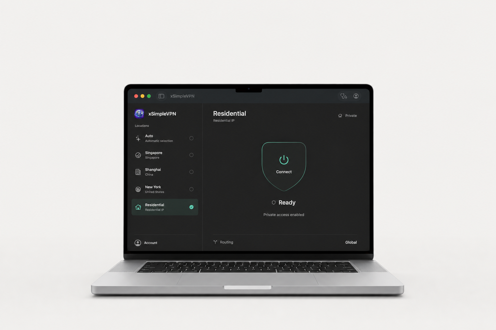

Choose a VPN location
Use Auto or select a location in the app. The location picker shows the access tier for each option.

A simpler connection. By XM LLC.
Your connection, simplified.
At home. At work. On the move.
Mac preview: connection testing is still in progress.
Native on MacUniversal app
Apple notarized appDeveloper ID signed
Direct DMG downloadNo App Store account needed
VPN for iPhone and iPad
Choose a location, connect and see your current VPN status. xSimple VPN brings connection and account controls together on iOS.
Use Auto or select a location in the app. The location picker shows the access tier for each option.
Connect or disconnect from the main screen, with your selected location and VPN status alongside the connection control.
View account and device access, or use Restore Purchases to check eligible App Store subscriptions.
Less in the way
A focused, native app that puts your location and connection status in one place.
A clear connection control, an at-a-glance status and a location list that stays out of your way.
A native macOS app with a collapsible sidebar. One universal download for both Apple Silicon and Intel.
Sign in when you are ready to connect. Your account determines which locations and services you can access.
Choose your connection
Explore locations in the Mac app.
Availability depends on your account.
Take it with you
On your desk or in your pocket.
Download the app from the App Store, review the privacy information and follow the system prompt to allow the VPN configuration. Choose Auto or an available location, then use the connection control. Access requirements are shown in the app.
Use Restore Purchases in the app with the Apple Account used for the purchase. Apple manages iOS subscriptions; you can review or cancel them in your Apple Account subscription settings.
The service uses account, device and subscription information, as well as operational and connection diagnostics. Read the privacy policy for the data categories, including connection IP addresses and timestamps, and how to request deletion.
No. The Mac app is distributed as a direct DMG download. You do need an Xsimple VPN account to connect. The iPhone and iPad app is downloaded through the App Store.
Open the DMG and move xSimpleVPN to Applications. Launch the app, sign in and follow the macOS prompts to authorize the VPN extension and configuration. Keep macOS security protections enabled.
No. Version 1.1.1 and later checks for signed updates and can install them from inside the app. You can also choose Check for Updates from the application menu at any time.
Mac VIP is $2.99 USD per month and renews automatically until canceled. Checkout and subscription management open on Stripe's secure hosted pages; VPN access is activated only after payment is confirmed.
The Mac app has been Developer ID signed and Apple notarized, but end-to-end connection testing is still in progress. Notarization does not certify VPN performance. Do not rely on this preview for critical connectivity; disconnect if Internet access is interrupted.
No. Residential may be visible in the location list, but connecting requires specific account authorization. Downloading the app does not grant access to this location.
Read the existing Xsimple VPN privacy policy for information about data handling and support contacts.